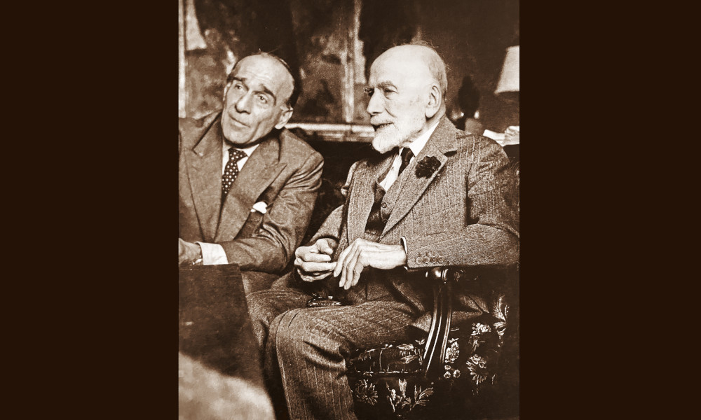

Albrighi

Consulta le banche dati della Fondazione
Federico Zeri e ricerca fotografie, documenti,
cataloghi d'asta, fondi e notizie
sull'antiquario corrente.
Luigi Albrighi (1896-1979) nacque a Milano e inizialmente praticò l’avvocatura. Abbandonata la professione, si trasferì a Firenze intorno al 1920, iniziando la carriera di mercante d’arte. Albrighi si interessò al commercio di dipinti e opere medievali e rinascimentali, assecondando le richieste dei collezionisti dell’epoca. Nella città toscana, dove l’antiquario fu attivo fino alla morte, sopraggiunta nel 1979, entrò in contatto con gli antiquari locali e in particolar modo con Eugenio Ventura (1887-1949) e con la figlia Paola. Albrighi e Paola Ventura strinsero un rapporto lavorativo e di vita, tanto che a partire dal 1961 i due risultano avere una galleria insieme a Palazzo Fossombroni, in via Dei Fossi 7r.
Luigi Albrighi fu un commerciante che seppe muoversi a livello internazionale, tra Parigi, Londra e New York, ebbe stretti rapporti con Bernard Berenson e conobbe importanti collezionisti privati, tra cui Achillito Chiesa. In occasione della vendita all’asta della collezione di quest’ultimo, nel 1925, Albrighi venne chiamato a New York per catalogare le opere messe in vendita.
Nel corso degli anni Quaranta, in ristrettezze economiche, l’antiquario venne accusato di esportazione illecita verso l’America dal tribunale di Firenze e fu coinvolto in alcune vicende di compravendita di quadri falsi.
Nel 2015 il suo archivio, precedentemente vagliato e riordinato da Luciano Bellosi, è stato donato alla Fondazione Federico Zeri.